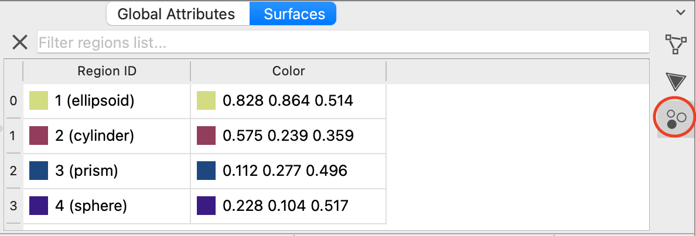
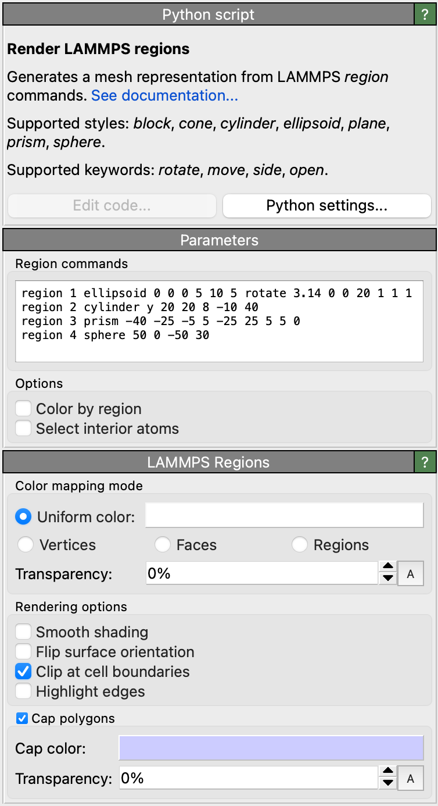
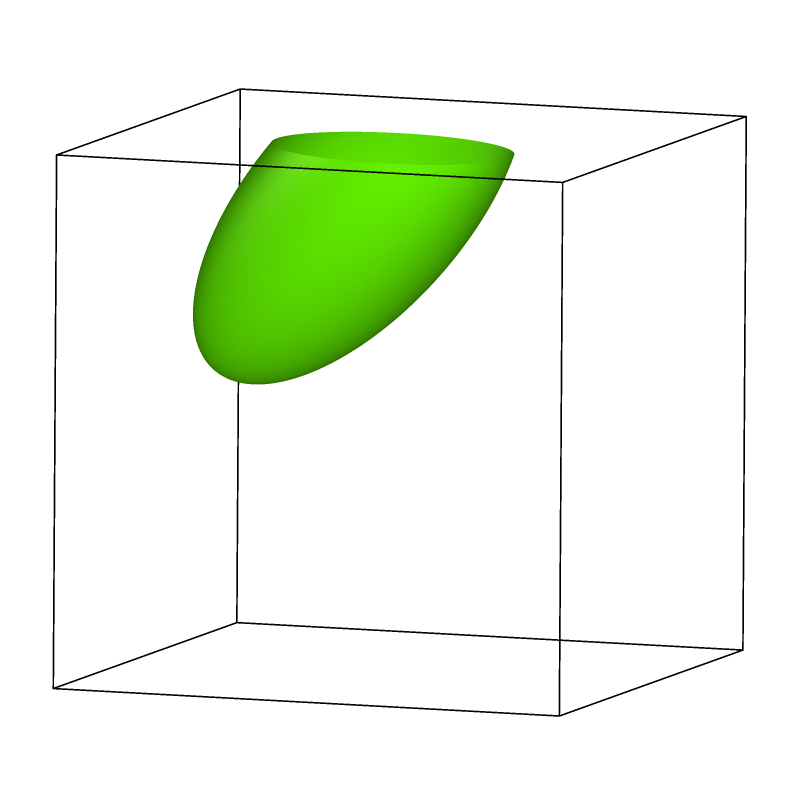
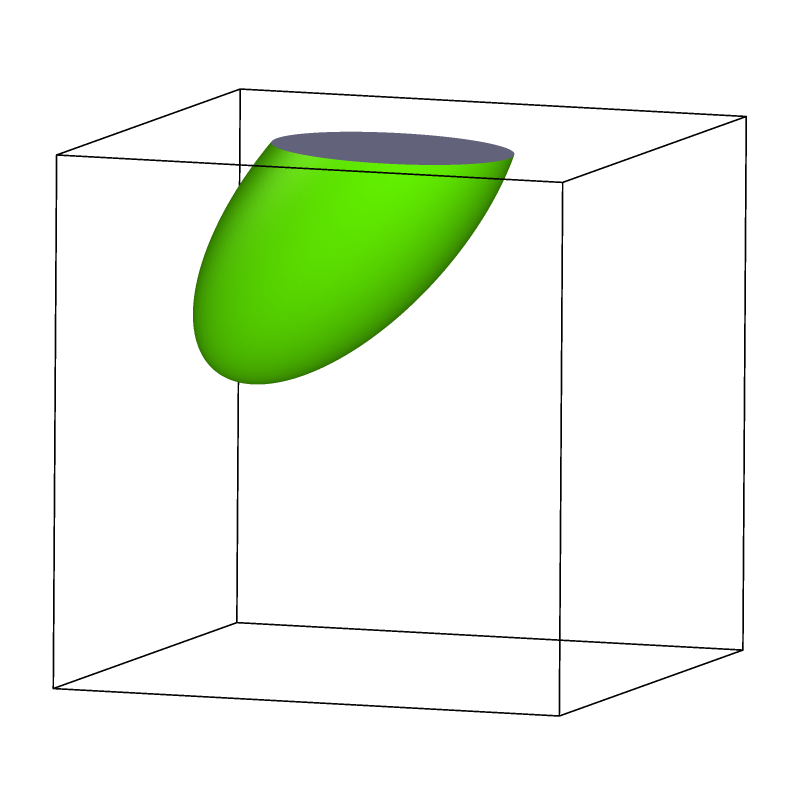
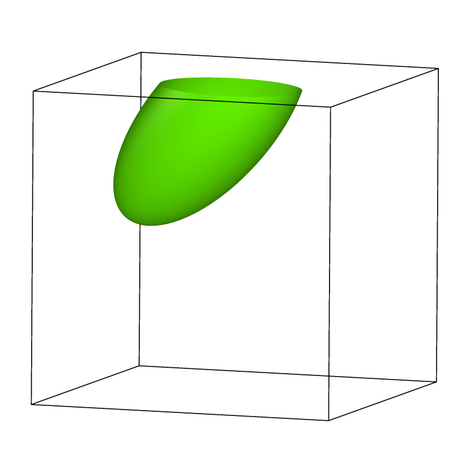
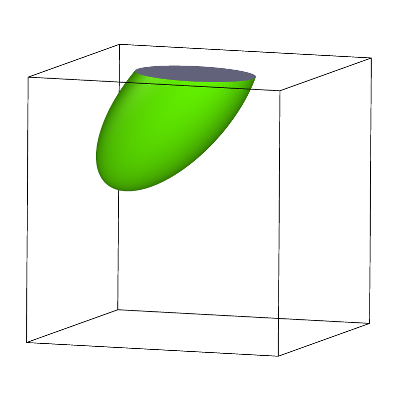

Render LAMMPS regions pro
New in version 3.8.0.
{kind=link}
This Python-based modifier function lets you visualize spatial regions with different 3d geometries as defined by the region command of the LAMMPS simulation code. The modifier generates explicit mesh-based representations of the parametric regions, e.g. cylinders, spheres, cones, planes, and blocks.
The modifier panel lets you enter one or more LAMMPS region commands into the text field. For example:
region 1 ellipsoid 0 0 0 5 10 5 rotate 3.14 0 0 20 1 1 1
region 2 cylinder y 20 20 8 -10 40
region 3 prism -40 -25 -5 5 -25 25 5 5 0
region 4 sphere 50 0 -50 30
The modifier interprets these text commands and generates a renderable surface mesh object consisting of multiple mesh parts, one for each region command, as depicted on the right. Furthermore, the list of generated surface mesh regions is accessible on the Surfaces tab of OVITO’s data inspector:
{kind=link}
Note
The modifier function directly interprets the entered region commands – the LAMMPS code is not required for this. However, the internal interpreter does not support all options of LAMMPS’ original region command. The limitations are documented below.
Supported region commands
{kind=link}
This modifier currently supports the following LAMMPS region styles and keywords:
- Styles:
block, cone, cylinder, ellipsoid, plane, prism, sphere
- Keywords:
rotate, move, side, open
Following the LAMMPS parsing rules, if a line ends with “&”, the command is expected to continue on the following line.
In OVITO, all regions have to be defined in simulation box units. Lattice units are not supported, because OVITO has no notion of lattices defined in LAMMPS.
LAMMPS equal-style variables of the form v_... are not supported either. This means you cannot create
dynamic regions with time-dependent position or orientation. Please replace variables with their literal values
when adopting region commands from LAMMPS.
Creating particle selections
The modifier provides an option to select all particles located within one of the defined regions.
Simulation cell boundaries
LAMMPS regions do not live in periodic domains, which is why the generated surface mesh does not get wrapped back into the simulation box even if the input box uses periodic boundary conditions (left).
Parts of the surface mesh that are outside the box boundaries may be hidden by checking the Clip at cell boundaries option of the Surface mesh visual element (center).
Futhermore, the Cap polygons option activates the display of caps where the mesh was clipped at the box boundaries (right).
 



{kind=link}
{kind=link}
See also
ovito.modifiers.RenderLAMMPSRegionsModifier (Python API)